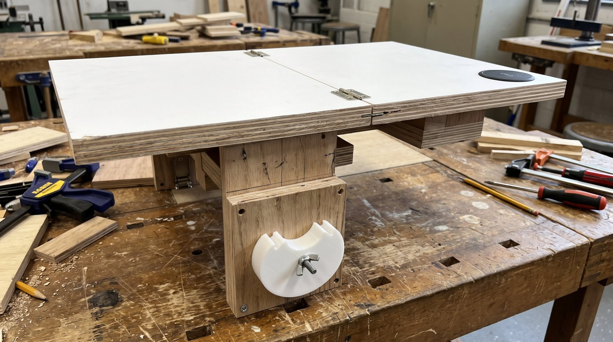
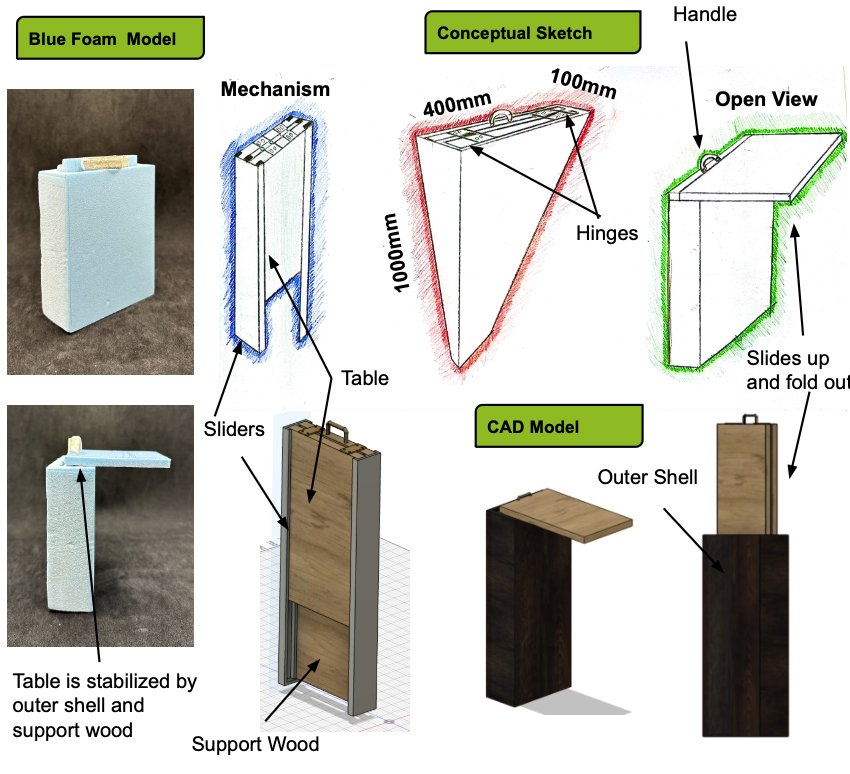
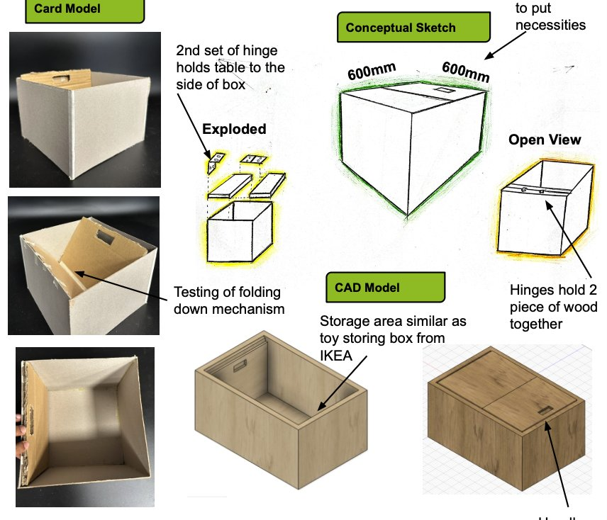
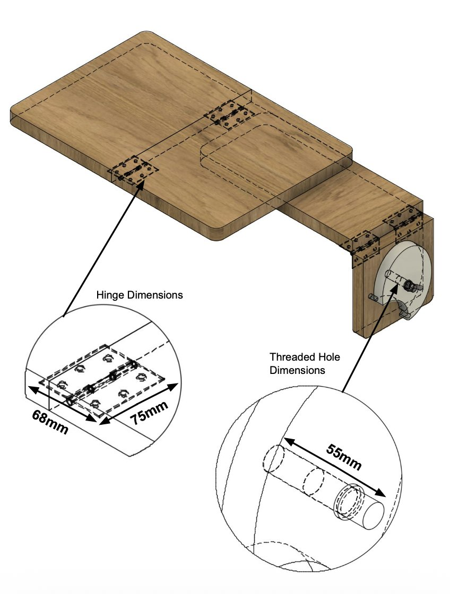
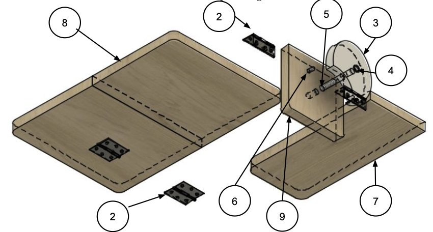
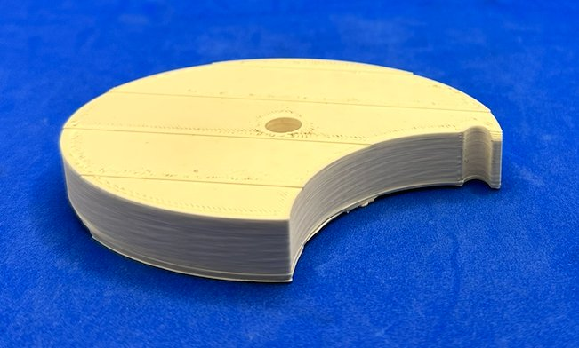
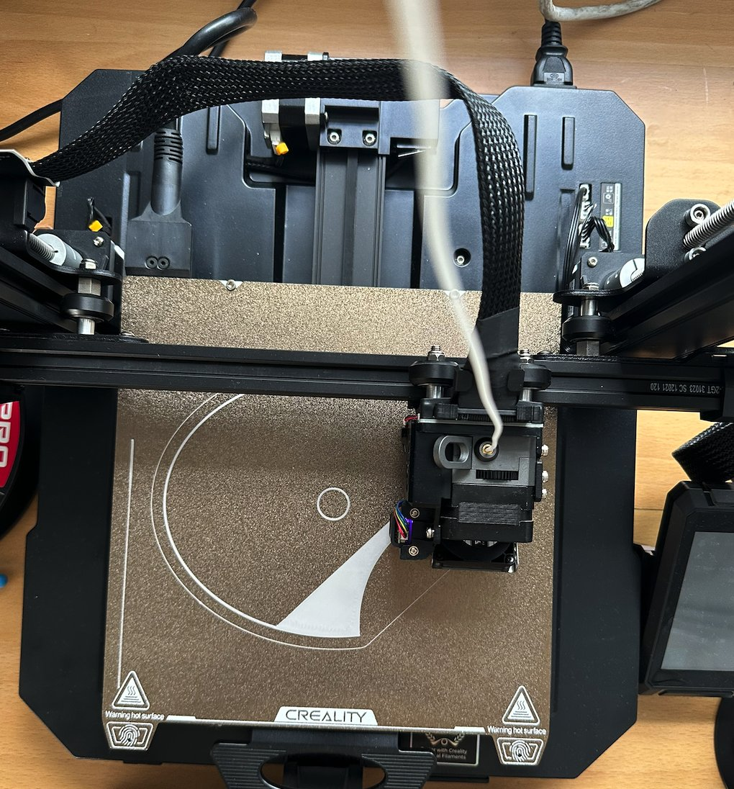
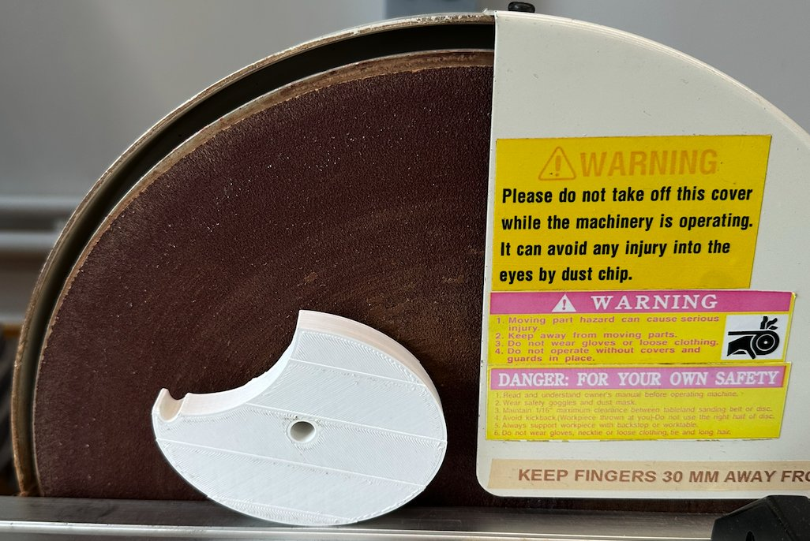
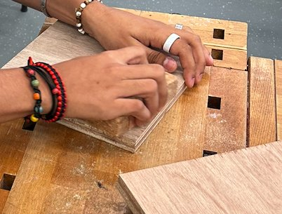
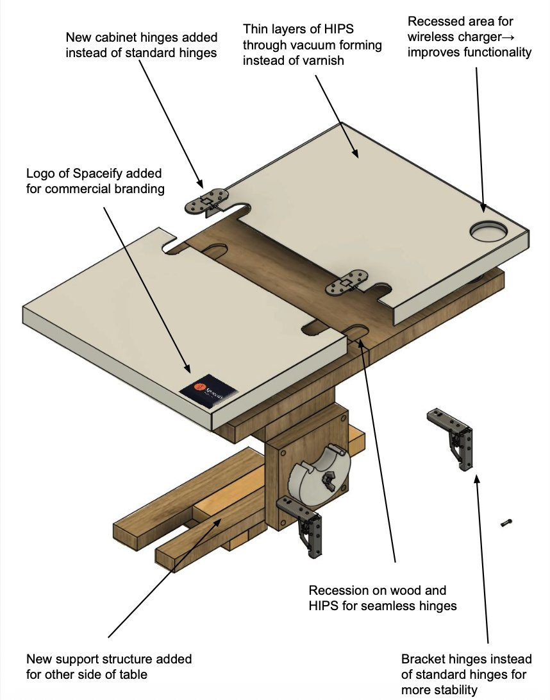

Design Technology HL Internal Assessment
Project Spaceify
A compact, low-cost foldable table that sits over a bed, so children in small subdivided flats have a safe place to study.

The problem
In large cities many families live in small, subdivided flats, and students are left without a safe, effective place to work. Existing space-saving tables cost too much for children living in poverty.
- It must adapt to different bed frame sizes, or work with no bed frame at all.
- It must be compact and lightweight.
- It must cost less than existing alternatives.
- It must adapt to different heights.
The design
- A 600 × 400 mm foldable table top that sits 235 mm above the bed, matching ergonomic elbow height.
- A foldable push-lock support system that holds the table against large forces.
- A detachable wireless charger that keeps electronics accessible and charged.
- A 5 mm HIPS surface applied by vacuum forming: smooth, solid in colour and easy to wipe clean.
My process

1. Concept 1: suitcase table
Blue foam model, sketch and CAD of a slide-out suitcase-style table. Users liked how easy it was to pull out and move, and that it worked on a chair or a bed. It wasted wood on support, could trap fingers and was 1 m long.

2. Concept 2: storage box
Card model, sketch and CAD of a storage box with a fold-down table. The storage saved space, but the box took up room, could trap fingers, and the handle unbalanced it. It only worked on a bed or the floor.

3. Isometric drawing
Isometric drawing with the hinge (68 × 75 mm) and threaded hole (55 mm) dimensions called out.

4. Assembly drawing
Numbered assembly drawing: plywood sections, 180° and 90° self-locking hinges, the PET locking mechanism, washer, steel bar and stopper.
Making the prototype

First print of my circular rotary lock.

Printing the lock on the Ender 3.

Finishing the printed lock on a disc sander.

Sanding a plywood section by hand.
Commercial design

The commercial version: cabinet and bracket hinges, a vacuum-formed HIPS top, a recessed wireless charger, a new support structure and the Spaceify logo.
How it was made
I prototyped with a laser cutter for the plywood parts and an Ender 3 for the rotary locks, printed in PLA and PET. For commercial batches, a CNC router cuts the plywood with a nesting layout that wastes only 0.31 m² of wood per 6 table tops. The HIPS top is vacuum formed, the Spaceify logo is heat stamped on, and hand tools are used for assembly and quality control.
Tools and software
Software
Machinery
Hand tools
What failed
- A small foldable block of support wood fractured and bent under the weight of a laptop.
- Standard hinges were not strong enough for the combined force of the wood and a laptop.
- The first finish options left rough edges that were hard to clean.
What I changed
- Replaced the standard hinges with industry-standard bracket hinges, and added recessed cabinet hinges to remove finger traps.
- Upgraded the surface to a 5 mm HIPS layer applied by vacuum forming.
- Redesigned the whole support structure as a stronger push-lock system.
What worked
The foldable push-lock gave the stability the table needed to carry its own weight against large forces. The detachable wireless charger made the product more useful by keeping devices charged and within reach.